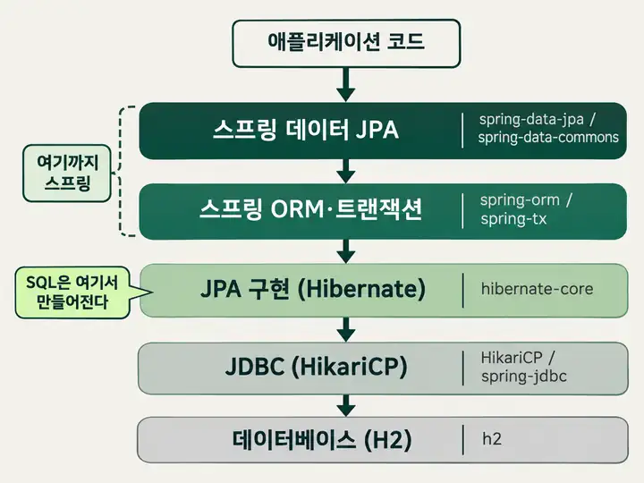
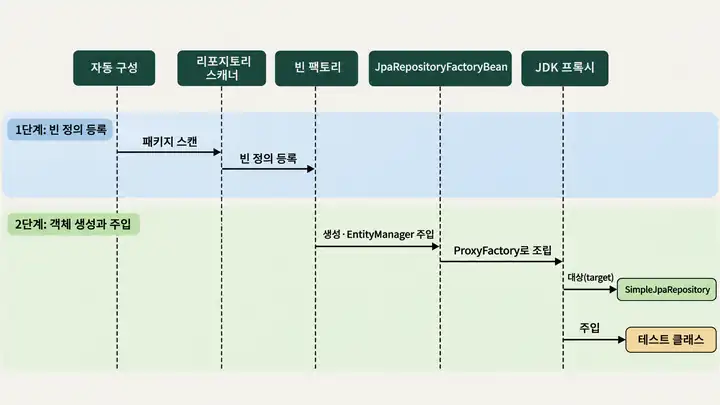
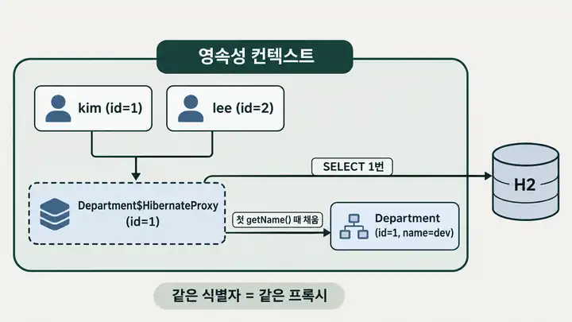

스프링 데이터 JPA / 01회
스프링 데이터 JPA 소개, 환경설정, 예제 도메인 모델
구현 클래스 한 줄 없이 선언한 리포지토리 인터페이스가 어떤 라이브러리 위에서, 어떤 자동 구성을 거쳐, 어떤 객체로 바뀌어 주입되는지를 의존성 트리와 실행 로그, 프록시 검사 결과로 따라가고 예제 도메인을 세운다.
오늘 끝나면 할 수 있는 것
- 순수 JPA로 짠 리포지토리에서 엔티티마다 반복되는 부분과 반복되지 않는 부분을 구분하고, 스프링 데이터 JPA가 그중 무엇을 대신하는지 설명할 수 있다.
- spring-boot-starter-data-jpa가 끌어오는 jar(spring-data-commons, spring-data-jpa, hibernate-core, HikariCP, spring-orm 등)를 계층별로 나누고 각 jar가 맡는 일을 말할 수 있다.
- H2의 임베디드 모드와 서버 모드를 구분해 데이터베이스 파일을 처음 만들고 TCP로 접속하는 순서를 설명하고, application.yml의 각 설정이 무엇을 바꾸는지 로그로 확인할 수 있다.
- 리포지토리 인터페이스가 자동 구성 → 패키지 스캔 → JpaRepositoryFactoryBean 빈 정의 → JDK 동적 프록시로 바뀌는 과정을 로그와
getClass()결과로 보여 줄 수 있다. - 다대일 양방향 예제 도메인을 설계하고, 지연 로딩 프록시·protected 기본 생성자·연관관계를 뺀 toString이 왜 필요한지 실행 로그로 설명할 수 있다.
핵심 강의 → 핵심 요약 → 실무 재판단 → 적용 연습 → 이해 확인
01 핵심 강의
이 강의의 차례 · 소제목 14개
- 이 회차의 질문: 구현 클래스가 없는 리포지토리는 누가 구현하는가
- 소개: 순수 JPA 리포지토리에서 반복되는 것
- 스프링 데이터라는 묶음: 커먼즈와 모듈, 그리고 인터페이스 계층
- 프로젝트 생성: 빌드 스크립트가 정하는 것
- 라이브러리 살펴보기: 스타터 하나가 쌓는 다섯 개의 층
- H2 데이터베이스 설치: 파일 하나짜리 데이터베이스를 서버로 띄우기
- 스프링 데이터 JPA와 DB 설정: application.yml 한 줄씩 읽기
- 동작 확인 1: 순수 JPA 리포지토리를 테스트와 로그로 읽기
- 동작 확인 2: 인터페이스 하나로 같은 일을 하기
- 한 층 아래: 인터페이스가 주입 가능한 빈이 되기까지
- 예제 도메인 모델: 부서와 직원
- 예제 도메인 동작 확인: 프록시가 언제 데이터베이스에 가는가
- 흔한 오해와 함정
- 이 회차가 다음 회차로 넘기는 것
이 회차의 질문: 구현 클래스가 없는 리포지토리는 누가 구현하는가
앞의 권들에서 JPA로 리포지토리를 직접 만들어 보았다. EntityManager를 주입받아 persist, find, JPQL 조회를 감싸는 클래스였다. 이 권의 주제인 스프링 데이터 JPA(Spring Data JPA)는 그 클래스를 쓰지 않게 해 준다. 인터페이스 하나를 선언하고 JpaRepository를 상속하면 저장, 단건 조회, 전체 조회, 삭제, 개수 세기, 페이징이 모두 동작한다. 구현 클래스는 소스 어디에도 없다.
구현 클래스가 없는데 메서드가 동작한다면, 누군가 실행 시점에 구현을 만들어 끼워 넣고 있다는 뜻이다. 이 회차는 그 "누군가"의 정체를 첫 실행부터 확인하는 데 목표를 둔다. 어떤 jar가 그 일을 하는지, 스프링 부트가 언제 그 일을 시작시키는지, 주입되는 객체의 실제 클래스는 무엇인지를 의존성 트리와 실행 로그, 그리고 getClass() 출력으로 본다. 이것을 처음에 확인해 두면 이후 회차에서 쿼리 메서드, 페이징, 벌크 수정, 사용자 정의 리포지토리가 왜 그런 제약을 갖는지 이해하기 쉬워진다. 모든 기능이 같은 프록시 구조 위에 얹혀 있기 때문이다.
이 권은 일곱 회차다. 이 회차가 프로젝트 환경과 예제 도메인을 세우고, 02회는 JpaRepository가 제공하는 공통 인터페이스, 03회는 메서드 이름으로 쿼리를 만드는 기능과 @Query, 04회는 페이징과 벌크 수정, @EntityGraph, 05회는 사용자 정의 리포지토리와 Auditing 같은 확장 기능, 06회는 구현체 SimpleJpaRepository와 새 엔티티 판단 로직의 분석, 07회는 Projections와 네이티브 쿼리 같은 나머지 기능을 다룬다. 프록시 내부의 인터셉터 하나하나를 해부하는 일은 06회의 몫이고, 이 회차는 프록시가 거기 있다는 사실과 그것이 만들어지는 경로까지만 확인한다.
실험 환경은 JDK 21(Temurin 21.0.13), 스프링 부트 3.5.16, 스프링 프레임워크 6.2.19, 스프링 데이터 릴리스 트레인 2025.0.13(spring-data-commons·spring-data-jpa 3.5.13), Hibernate ORM 6.6.53.Final, H2 2.3.232, HikariCP 6.3.3이다. 모두 부트 3.5.16의 의존성 관리 BOM이 정한 버전이다. 예제 도메인은 이 회차를 위해 새로 만든 부서(Department)와 직원(Employee)이다.
소개: 순수 JPA 리포지토리에서 반복되는 것
먼저 스프링 데이터 JPA 없이 직원 리포지토리를 만들어 보자. JPA 기본편과 활용편에서 써 온 방식 그대로다.
package lab.datajpa.repository;
import jakarta.persistence.EntityManager;
import jakarta.persistence.PersistenceContext;
import lab.datajpa.domain.Employee;
import org.springframework.stereotype.Repository;
import java.util.List;
import java.util.Optional;
@Repository
public class EmployeeJpaRepository {
@PersistenceContext
private EntityManager em;
public Employee save(Employee employee) {
em.persist(employee);
return employee;
}
public void delete(Employee employee) {
em.remove(employee);
}
public Optional<Employee> findById(Long id) {
return Optional.ofNullable(em.find(Employee.class, id));
}
public List<Employee> findAll() {
return em.createQuery("select e from Employee e", Employee.class)
.getResultList();
}
public long count() {
return em.createQuery("select count(e) from Employee e", Long.class)
.getSingleResult();
}
public EntityManager entityManager() { return em; } // 실험용: 주입된 객체를 확인하려고 둔 메서드
}부서 리포지토리를 만든다고 해 보자. 코드를 복사한 뒤 Employee를 Department로 바꾸고, JPQL 문자열 안의 엔티티 이름을 바꾸면 끝난다. 엔티티가 스무 개면 이 작업을 스무 번 한다. 달라지는 것은 딱 두 가지, 엔티티 타입과 식별자 타입이다. JPQL 문자열의 엔티티 이름도 엔티티 타입에서 나온다. 나머지는 모두 같다.
이 반복은 제네릭으로 어느 정도 걷어낼 수 있다. JpaGenericRepository<T, ID> 같은 추상 클래스를 만들고 생성자에서 Class<T>를 받아 em.find(type, id)와 "select x from " + entityName + " x"를 조립하면, 엔티티별 리포지토리는 그 클래스를 상속하는 한 줄짜리 클래스가 된다. 스프링 데이터 JPA의 SimpleJpaRepository가 실제로 하는 일도 본질은 이것이다. 엔티티 타입 정보를 들고 있다가 공통 CRUD를 그 타입에 맞춰 실행하는 범용 구현이다.
그런데 제네릭 상속으로는 해결되지 않는 것이 둘 있다. 첫째, 엔티티마다 다른 조회가 필요하다. "이름으로 직원 찾기", "나이가 몇 살 이상인 직원 찾기" 같은 메서드는 공통 클래스에 넣을 수 없고, 결국 엔티티별 클래스에 손으로 JPQL을 써야 한다. 둘째, 상속받은 한 줄짜리 클래스조차 여전히 개발자가 만든 클래스다. 스프링 데이터는 이 두 문제를 한 가지 방식으로 푼다. 개발자는 인터페이스만 선언하고, 구현 객체는 실행 시점에 프록시로 만든다. 공통 메서드는 프록시 뒤의 범용 구현(SimpleJpaRepository)으로 보내고, 인터페이스에만 선언된 메서드는 메서드 이름이나 @Query에서 쿼리를 만들어 실행한다. 이름 해석은 03회의 주제다.
package lab.datajpa.repository;
import lab.datajpa.domain.Employee;
import org.springframework.data.jpa.repository.JpaRepository;
public interface EmployeeRepository extends JpaRepository<Employee, Long> {
}이것이 위 클래스를 대신하는 선언 전부다. 타입 인자 두 개가 앞에서 말한 "달라지는 두 가지"에 정확히 대응한다. Employee는 관리할 엔티티 타입이고 Long은 그 엔티티의 식별자 타입이다. 스프링 데이터 레퍼런스는 최상위 인터페이스 Repository를 "관리할 도메인 클래스와 그 식별자 타입을 타입 인자로 받는", 주로 표식(marker) 역할을 하는 인터페이스라고 설명한다. 표식이라는 말이 중요하다. 이 인터페이스를 상속했는지가 곧 "이 인터페이스의 구현을 만들어 달라"는 신호이고, 스캔하는 쪽은 그 신호를 보고 후보를 고른다.
스프링 데이터라는 묶음: 커먼즈와 모듈, 그리고 인터페이스 계층
스프링 데이터(Spring Data)는 단일 라이브러리가 아니라 여러 모듈의 묶음이다. 공통 추상화를 담은 spring-data-commons가 바닥에 있고, 그 위에 저장소별 모듈(spring-data-jpa, spring-data-mongodb, spring-data-redis 등)이 올라간다. 이 모듈들은 함께 시험된 버전 조합을 "릴리스 트레인"이라는 이름으로 묶어 내놓는다. 부트 3.5.16의 BOM은 spring-data-bom.version을 2025.0.13으로 정해 두었고, 이 트레인 BOM이 다시 spring-data-commons와 spring-data-jpa를 3.5.13으로 고정한다. 개발자가 build.gradle에 버전을 적지 않아도 두 jar의 버전이 어긋나지 않는 이유다.
리포지토리 인터페이스가 어느 jar에 있는지 보면 역할 분담이 드러난다. javap로 3.5.13의 인터페이스 선언을 출력하면 다음과 같다.
public interface org.springframework.data.jpa.repository.JpaRepository<T, ID>
extends org.springframework.data.repository.ListCrudRepository<T, ID>,
org.springframework.data.repository.ListPagingAndSortingRepository<T, ID>,
org.springframework.data.repository.query.QueryByExampleExecutor<T> {
public abstract void flush();
public abstract <S extends T> S saveAndFlush(S);
...
public interface org.springframework.data.repository.ListCrudRepository<T, ID> extends org.springframework.data.repository.CrudRepository<T, ID>
public interface org.springframework.data.repository.CrudRepository<T, ID> extends org.springframework.data.repository.Repository<T, ID>
public interface org.springframework.data.repository.PagingAndSortingRepository<T, ID> extends org.springframework.data.repository.Repository<T, ID>
public interface org.springframework.data.repository.ListPagingAndSortingRepository<T, ID> extends org.springframework.data.repository.PagingAndSortingRepository<T, ID> Repository<T, ID> (표식 인터페이스)
/ \
CrudRepository<T, ID> PagingAndSortingRepository<T, ID>
| |
ListCrudRepository<T, ID> ListPagingAndSortingRepository<T, ID> QueryByExampleExecutor<T>
\ | /
+-------- JpaRepository<T, ID> -------------------+
------------------------------------------------------------------------------------
위: spring-data-commons (org.springframework.data.repository.*)
아래: spring-data-jpa (org.springframework.data.jpa.repository.*)
패키지 이름이 경계를 그대로 보여 준다. Repository, CrudRepository, 페이징 인터페이스는 JPA를 전혀 모르는 spring-data-commons에 있고, JpaRepository만 spring-data-jpa에 있다. flush()와 saveAndFlush()처럼 영속성 컨텍스트라는 개념이 있어야 의미가 생기는 메서드가 JpaRepository에만 선언된 것도 그 때문이다. 몽고DB 모듈을 쓰면 같은 CrudRepository를 상속하되 그 아래 구현은 몽고DB 드라이버를 부른다.
계층에서 한 가지 눈여겨볼 점은 PagingAndSortingRepository가 CrudRepository를 상속하지 않는다는 것이다. 스프링 데이터 3.0에서 바뀐 부분으로, 2.x 시절에는 페이징 인터페이스가 CRUD 인터페이스를 상속했다. 3.0은 List를 돌려주는 ListCrudRepository와 ListPagingAndSortingRepository를 새로 넣으면서 둘을 분리했다. 그래서 2.x 시절 예제처럼 PagingAndSortingRepository만 상속한 인터페이스는 3.x에서 save나 findById를 잃는다. JpaRepository를 상속하면 두 갈래를 모두 받으므로 이 차이를 느낄 일이 없다. 각 메서드의 의미는 02회에서 하나씩 본다.
프로젝트 생성: 빌드 스크립트가 정하는 것
프로젝트 뼈대는 start.spring.io에서 받는다. 부트 3.x는 자바 17 이상을 요구하고 JPA API를 jakarta.persistence 패키지로 쓴다. 이 권의 실험에 필요한 의존성은 Spring Data JPA, H2 Database 둘이고, 웹 계층이 필요한 회차에서는 Spring Web을 더한다. 롬복(Lombok)은 선택이다. 이 회차의 예제는 롬복이 하는 일을 눈으로 보이게 하려고 생성자와 getter를 직접 썼다. 빌드 스크립트는 다음과 같은 모양이 된다.
plugins {
id 'java'
id 'org.springframework.boot' version '3.5.16'
id 'io.spring.dependency-management' version '1.1.7'
}
group = 'lab'
version = '0.0.1-SNAPSHOT'
java {
toolchain {
languageVersion = JavaLanguageVersion.of(21)
}
}
repositories {
mavenCentral()
}
dependencies {
implementation 'org.springframework.boot:spring-boot-starter-data-jpa'
runtimeOnly 'com.h2database:h2'
testImplementation 'org.springframework.boot:spring-boot-starter-test'
testRuntimeOnly 'org.junit.platform:junit-platform-launcher'
}
tasks.named('test') {
useJUnitPlatform()
}버전 번호가 의존성 줄에 하나도 없는 이유와 implementation·runtimeOnly의 차이는 JPA 활용 1편 01회에서 자세히 다뤘다. 다시 요약하면, 부트 플러그인이 적용되면 io.spring.dependency-management 플러그인이 부트의 BOM(spring-boot-dependencies)을 들여와 버전을 채우고, H2는 코드가 직접 참조하지 않고 실행 시점에 JDBC 드라이버로만 쓰이므로 runtimeOnly에 둔다. 이 회차의 실험은 네트워크 없이 로컬 캐시만으로 돌렸기 때문에 부트 플러그인 대신 Gradle의 platform('org.springframework.boot:spring-boot-dependencies:3.5.16')으로 같은 BOM을 직접 들여왔다. 이 회차에 나오는 버전 번호는 모두 그 결과다.
테스트 쪽의 spring-boot-starter-test는 JUnit 5(Jupiter), AssertJ, Mockito, 스프링 테스트 컨텍스트 프레임워크를 함께 가져온다. 실험 로그에 "Mockito is currently self-attaching" 경고가 찍힌 것도 이 스타터가 Mockito를 클래스패스에 올렸기 때문이다. 이 줄은 Mockito가 인라인 목 생성을 위해 실행 중에 자바 에이전트를 스스로 붙인다는 안내이고, 이어지는 WARNING 줄들은 동적 에이전트 로딩에 대한 JDK 21의 경고다. 리포지토리 동작과는 관계가 없다.
라이브러리 살펴보기: 스타터 하나가 쌓는 다섯 개의 층
gradle dependencies --configuration runtimeClasspath로 실행 클래스패스를 출력하면 spring-boot-starter-data-jpa 아래가 이렇게 펼쳐진다. 길어서 중요한 가지만 남겼다.
+--- org.springframework.boot:spring-boot-starter-data-jpa -> 3.5.16
| +--- org.springframework.boot:spring-boot-starter:3.5.16
| | +--- org.springframework.boot:spring-boot:3.5.16
| | +--- org.springframework.boot:spring-boot-autoconfigure:3.5.16
| | +--- org.springframework.boot:spring-boot-starter-logging:3.5.16 (logback-classic 1.5.34 ...)
| | +--- jakarta.annotation:jakarta.annotation-api:2.1.1
| | \--- org.yaml:snakeyaml:2.4
| +--- org.springframework.boot:spring-boot-starter-jdbc:3.5.16
| | +--- com.zaxxer:HikariCP:6.3.3
| | \--- org.springframework:spring-jdbc:6.2.19
| | \--- org.springframework:spring-tx:6.2.19
| +--- org.hibernate.orm:hibernate-core:6.6.53.Final
| | +--- jakarta.persistence:jakarta.persistence-api:3.1.0
| | +--- jakarta.transaction:jakarta.transaction-api:2.0.1
| | +--- org.jboss.logging:jboss-logging:3.5.0.Final -> 3.6.3.Final
| | +--- net.bytebuddy:byte-buddy:1.17.8
| | +--- org.glassfish.jaxb:jaxb-runtime:4.0.2 -> 4.0.9
| | \--- org.antlr:antlr4-runtime:4.13.2
| +--- org.springframework.data:spring-data-jpa:3.5.13
| | +--- org.springframework.data:spring-data-commons:3.5.13
| | +--- org.springframework:spring-orm:6.2.19
| | +--- org.springframework:spring-context:6.2.19 (*)
| | +--- org.springframework:spring-aop:6.2.19 (*)
| | +--- org.springframework:spring-tx:6.2.19 (*)
| | \--- org.antlr:antlr4-runtime:4.13.2
| \--- org.springframework:spring-aspects:6.2.19
| \--- org.aspectj:aspectjweaver:1.9.22.1 -> 1.9.25.1
\--- com.h2database:h2 -> 2.3.232트리를 위에서 아래로 읽으면 스타터는 크게 네 가지를 묶는다. 부트 자체(spring-boot-starter), JDBC 계층(spring-boot-starter-jdbc), JPA 구현체(hibernate-core), 그리고 스프링 데이터 JPA다. 여기에 우리가 따로 넣은 H2가 더해진다. 각 jar를 호출 방향의 층으로 다시 늘어놓으면 이 권에서 메서드 호출 하나가 지나가는 길이 그대로 보인다.
애플리케이션 코드 employeeRepository.findAll()
|
[5] 스프링 데이터 JPA spring-data-jpa 3.5.13 (JpaRepository, SimpleJpaRepository, JpaRepositoryFactory)
| spring-data-commons 3.5.13 (Repository, 프록시 팩토리, 쿼리 메서드 이름 해석)
|
[4] 스프링 ORM/트랜잭션 spring-orm (공유 EntityManager, JpaTransactionManager), spring-tx, spring-aop
|
[3] JPA jakarta.persistence-api 3.1 (인터페이스: EntityManager ...)
| hibernate-core 6.6.53 (구현: 영속성 컨텍스트, JPQL→SQL, byte-buddy 프록시)
|
[2] JDBC spring-jdbc, HikariCP 6.3.3 (커넥션 풀), java.sql 인터페이스
|
[1] 데이터베이스 h2 2.3.232 (JDBC 드라이버 + DB 엔진이 한 jar에)
층마다 짚어 둘 것이 있다. 맨 위의 스프링 데이터 JPA는 JPA API에 대고 코드를 짠다. spring-data-jpa의 pom을 열어 보면 hibernate-core 의존성이 <optional>true</optional>로 선언되어 있고, EclipseLink 의존성도 같은 방식으로 들어 있다. 스프링 데이터 JPA 자체는 특정 구현체에 묶이지 않고, 어떤 구현체를 쓸지는 스타터가 hibernate-core를 넣어 정한다는 뜻이다. 그래서 이 권의 실행 로그에 찍히는 SQL은 스프링 데이터가 아니라 Hibernate가 만든 것이다. 스프링 데이터는 JPQL이나 Criteria 쿼리를 만들어 EntityManager에 넘기고, SQL 번역은 Hibernate가 한다.
둘째 층의 spring-orm은 JPA 활용편과 스프링 DB 2편에서 이미 만났다. 트랜잭션마다 실제 EntityManager를 찾아 호출을 넘겨 주는 공유 EntityManager 프록시와 JpaTransactionManager가 여기에 있다. 스프링 데이터 JPA의 SimpleJpaRepository가 받는 EntityManager도 이 공유 프록시다. 즉 스프링 데이터 JPA는 JPA를 대체하는 것이 아니라 그 위에 한 층을 더 얹는다. 영속성 컨텍스트, 변경 감지, 쓰기 지연, 지연 로딩은 모두 아래층 Hibernate의 동작 그대로이고, 스프링 데이터 JPA를 쓴다고 그 규칙이 바뀌지 않는다. 이 사실은 이 권 내내 반복해서 확인하게 된다.
트리에 antlr4-runtime이 두 번 나오는 것도 흥미롭다. Hibernate 6는 HQL·JPQL 문자열을 ANTLR 4로 만든 파서로 해석한다. 그런데 spring-data-jpa도 같은 런타임을 직접 의존한다. jar 목록을 보면 HqlParser, JpqlParser, EqlParser 같은 생성된 파서 클래스가 들어 있다. 스프링 데이터 JPA가 개발자가 쓴 쿼리 문자열을 직접 분석할 일이 있다는 뜻이다. 문자열 쿼리에 정렬 조건을 붙이거나 페이징용 count 쿼리를 만들어야 할 때가 그렇다. 04회의 페이징에서 이 동작을 다시 만난다. byte-buddy는 Hibernate가 지연 로딩 프록시 클래스를 실행 중에 만들 때 쓰는 바이트코드 생성 라이브러리다. 이 회차 끝의 예제 도메인 실험에서 그 결과물인 Department$HibernateProxy 클래스를 직접 본다.
| jar | 층 | 이 권에서 맡는 일 |
|---|---|---|
| spring-data-commons 3.5.13 | 스프링 데이터 공통 | Repository 계층, 리포지토리 스캔과 프록시 조립 틀, 메서드 이름 파싱, Pageable·Sort |
| spring-data-jpa 3.5.13 | 스프링 데이터 JPA | JpaRepository, SimpleJpaRepository, JpaRepositoryFactoryBean, @Query 처리 |
| spring-orm, spring-tx, spring-aop 6.2.19 | 스프링 ORM/트랜잭션 | 공유 EntityManager, JpaTransactionManager, 프록시와 인터셉터 |
| hibernate-core 6.6.53.Final | JPA 구현 | 영속성 컨텍스트, JPQL→SQL 번역, 지연 로딩 프록시(byte-buddy) |
| HikariCP 6.3.3, spring-jdbc | JDBC | 커넥션 풀, JDBC 예외 변환 기반 |
| h2 2.3.232 | 데이터베이스 | JDBC 드라이버(org.h2.Driver), DB 엔진, 웹 콘솔 |
| spring-boot-autoconfigure 3.5.16 | 설정 | 위 객체들을 클래스패스와 설정값으로부터 자동으로 등록 |

H2 데이터베이스 설치: 파일 하나짜리 데이터베이스를 서버로 띄우기
H2는 자바로 만든 관계형 데이터베이스다. jar 하나 안에 세 가지가 함께 들어 있다. 데이터베이스 엔진, JDBC 드라이버, 그리고 웹 브라우저로 접속하는 관리 콘솔이다. 2.3.232 jar를 열어 보면 META-INF/services/java.sql.Driver 파일에 org.h2.Driver가 적혀 있어 DriverManager가 서비스 로더로 드라이버를 찾을 수 있고, org.h2.tools.Console과 org.h2.tools.Server 클래스가 콘솔과 서버를 띄운다. 공식 사이트에서 받은 배포본의 bin 폴더에서 h2.bat(윈도우)을 실행하거나 java -jar h2*.jar를 실행하면 콘솔이 뜨고, H2 튜토리얼에 따르면 브라우저가 http://localhost:8082의 로그인 화면을 연다.
H2는 접속 URL 모양에 따라 동작 방식이 달라진다. jdbc:h2:~/datajpa처럼 경로만 적으면 임베디드(embedded) 모드다. 드라이버를 부른 JVM 안에서 엔진이 직접 돌고, 사용자 홈 폴더의 datajpa.mv.db 파일을 그 프로세스가 연다. jdbc:h2:tcp://localhost/~/datajpa처럼 tcp://가 붙으면 서버(server) 모드다. 이때는 콘솔과 함께 뜬 H2 TCP 서버 프로세스가 파일을 열고, 애플리케이션은 소켓으로 그 서버에 접속하는 클라이언트가 된다. 포트를 생략하면 기본 포트를 쓰는데, 2.3.232의 org.h2.engine.Constants에는 TCP 기본 포트가 9092, 웹 콘솔 기본 포트가 8082로 정해져 있다. jdbc:h2:mem:이름은 메모리 모드로, 파일 없이 JVM 메모리에만 데이터베이스가 있다.
처음 데이터베이스를 만들 때는 순서가 있다. H2 튜토리얼에 따르면 임베디드 URL로 접속했는데 데이터베이스가 없으면 새 빈 데이터베이스가 자동으로 만들어진다. 반면 TCP 연결이나 웹 콘솔을 통한 원격 생성은 기본적으로 허용되지 않는다. 그래서 콘솔에서 먼저 jdbc:h2:~/datajpa(임베디드)로 한 번 접속해 홈 폴더에 datajpa.mv.db 파일을 만들고, 그다음부터는 jdbc:h2:tcp://localhost/~/datajpa로 접속한다. 서버에 -ifNotExists 옵션을 주면 원격 생성을 허용할 수 있지만, 튜토리얼은 이것이 원격 보안 구멍을 만들 수 있으니 쓰려면 포트를 방화벽으로 막으라고 경고한다.
왜 굳이 서버 모드로 쓰는가. 임베디드 모드의 파일은 그 파일을 연 프로세스가 독점한다. 콘솔이 임베디드로 파일을 열어 둔 채 애플리케이션이 같은 파일을 임베디드로 열면 잠금 충돌이 난다. 서버 모드에서는 파일을 여는 쪽이 H2 서버 하나뿐이고 콘솔과 애플리케이션은 모두 클라이언트이므로, 테스트를 돌리는 동안 콘솔에서 테이블을 들여다볼 수 있다. 이 권의 실습에서 테스트 데이터를 커밋해 두고 콘솔로 확인하는 일이 잦으므로 서버 모드가 편하다. 콘솔을 띄우는 배포본과 build.gradle이 받는 드라이버(이 실험에서는 2.3.232)는 같은 버전으로 맞춰 두는 것이 안전하다.
스프링 데이터 JPA와 DB 설정: application.yml 한 줄씩 읽기
spring:
datasource:
url: jdbc:h2:tcp://localhost/~/datajpa # 실험 로그는 jdbc:h2:mem:datajpa 로 얻었다
username: sa
password:
driver-class-name: org.h2.Driver
jpa:
hibernate:
ddl-auto: create
properties:
hibernate:
format_sql: true
logging.level:
org.hibernate.SQL: debug
org.hibernate.orm.jdbc.bind: trace
org.springframework.data.repository.config: debugspring.datasource.*는 부트의 DataSourceAutoConfiguration이 읽는다. 클래스패스에 HikariCP가 있으므로 HikariDataSource가 만들어지고, 실행 로그의 "HikariPool-1 - Added connection conn0: url=jdbc:h2:mem:datajpa user=SA"가 그 풀이 첫 커넥션을 연 순간이다.
spring.jpa.hibernate.ddl-auto: create는 애플리케이션이 뜰 때 엔티티 매핑을 보고 테이블을 지웠다가 다시 만들게 한다. 스프링 부트 레퍼런스는 JPA 데이터베이스가 기본적으로 H2, HSQL 같은 임베디드 데이터베이스를 쓸 때만 자동으로 생성된다고 적고 있다. TCP URL은 임베디드로 판단되지 않으므로 이 줄이 없으면 테이블이 만들어지지 않는다. create는 시작할 때마다 기존 데이터를 지우므로 학습용 설정이고, 운영 데이터베이스에서는 쓰지 않는다.
spring.jpa.properties.hibernate.* 아래에 적은 값은 부트가 해석하지 않고 Hibernate 설정으로 그대로 넘긴다. format_sql은 SQL을 여러 줄로 정렬해 찍게 한다. SQL을 출력하는 방법은 두 가지가 있다. spring.jpa.show-sql: true(Hibernate의 hibernate.show_sql)는 SQL을 표준 출력으로 바로 쓴다. 반면 org.hibernate.SQL 로거를 debug로 켜면 같은 SQL이 로깅 프레임워크를 거쳐 나간다. 로깅 프레임워크를 거치면 시각·스레드 이름이 함께 찍히고, 파일로 보내거나 환경별로 끌 수 있다. 그래서 둘 중 로거 쪽을 쓴다. 둘을 동시에 켜면 같은 SQL이 두 번 찍힌다.
org.hibernate.orm.jdbc.bind: trace는 PreparedStatement의 물음표 자리에 실제로 어떤 값이 바인딩되는지 보여 준다. 이 실험의 Hibernate 6.6.53에서는 binding parameter (1:VARCHAR) <- [dev] 같은 줄이 SQL 바로 아래에 찍혔다. 괄호 안은 파라미터 순번과 JDBC 타입이다. 값이 채워진 SQL을 한 줄로 보고 싶다면 JDBC 드라이버를 감싸는 프록시 드라이버 방식의 외부 라이브러리(p6spy 등)를 쓰는 방법도 있다. 다만 모든 JDBC 호출을 한 겹 더 감싸는 방식이므로, 운영 환경에 넣을지는 비용을 따져 보고 정한다. 마지막 줄 org.springframework.data.repository.config: debug는 이 회차의 실험용이다. 스프링 데이터가 리포지토리를 찾는 과정을 로그로 보려고 켰다.
동작 확인 1: 순수 JPA 리포지토리를 테스트와 로그로 읽기
먼저 손으로 만든 EmployeeJpaRepository가 제대로 동작하는지 확인한다. 직원 엔티티의 전체 코드는 뒤의 예제 도메인 절에 있다. 지금은 이름과 나이를 받는 생성자가 있고 식별자가 @Id @GeneratedValue로 매핑되어 있다는 것만 알면 된다.
@SpringBootTest
@Transactional
class EmployeeJpaRepositoryTest {
@Autowired EmployeeJpaRepository employeeJpaRepository;
@Test
void basicCrud() {
System.out.println("### pure: class = " + employeeJpaRepository.getClass().getName());
System.out.println("### pure: em class = " + employeeJpaRepository.entityManager().getClass().getName());
Employee e1 = employeeJpaRepository.save(new Employee("kim", 30));
Employee e2 = employeeJpaRepository.save(new Employee("lee", 25));
System.out.println("### pure: after save ids = " + e1.getId() + ", " + e2.getId());
Employee found = employeeJpaRepository.findById(e1.getId()).get();
assertThat(found).isSameAs(e1);
assertThat(employeeJpaRepository.findAll()).hasSize(2);
assertThat(employeeJpaRepository.count()).isEqualTo(2);
employeeJpaRepository.delete(e1);
assertThat(employeeJpaRepository.count()).isEqualTo(1);
System.out.println("### pure: end");
}
}테스트 클래스 세 개(이 테스트, 뒤의 스프링 데이터 JPA 테스트, 예제 도메인 테스트)를 한 번에 돌렸을 때 이 테스트 부분의 출력이다. 시각과 프로세스 번호는 지웠고, 바인딩 로그는 첫 INSERT 것만 남겼다.
### pure: class = lab.datajpa.repository.EmployeeJpaRepository$$SpringCGLIB$$0
### pure: em class = jdk.proxy3.$Proxy107
### pure: after save ids = 5, 6
DEBUG org.hibernate.SQL : insert into employee (age, department_id, name, employee_id) values (?, ?, ?, ?)
TRACE org.hibernate.orm.jdbc.bind : binding parameter (1:INTEGER) <- [30]
TRACE org.hibernate.orm.jdbc.bind : binding parameter (2:BIGINT) <- [null]
TRACE org.hibernate.orm.jdbc.bind : binding parameter (3:VARCHAR) <- [kim]
TRACE org.hibernate.orm.jdbc.bind : binding parameter (4:BIGINT) <- [5]
DEBUG org.hibernate.SQL : insert into employee (age, department_id, name, employee_id) values (?, ?, ?, ?)
DEBUG org.hibernate.SQL : select e1_0.employee_id, e1_0.age, e1_0.department_id, e1_0.name from employee e1_0
DEBUG org.hibernate.SQL : select count(e1_0.employee_id) from employee e1_0
DEBUG org.hibernate.SQL : delete from employee where employee_id=?
DEBUG org.hibernate.SQL : select count(e1_0.employee_id) from employee e1_0
### pure: end한 줄씩 읽어 보자. 첫 줄의 클래스 이름 끝에 $$SpringCGLIB$$0이 붙어 있다. 우리가 만든 클래스가 아니라 그 클래스를 상속한 CGLIB 프록시가 주입되었다는 뜻이다. @Repository가 붙은 빈에는 부트가 등록한 예외 변환 후처리기가 프록시를 씌워, JPA 예외를 스프링의 DataAccessException 계층으로 바꿔 던지게 한다. 둘째 줄의 EntityManager는 jdk.proxy3.$Proxy107, 즉 JDK 동적 프록시다. 스프링 DB 2편에서 본 공유 EntityManager 프록시로, 호출될 때마다 현재 트랜잭션에 묶인 실제 EntityManager를 찾아 넘긴다. 손으로 만든 리포지토리도 이미 프록시 두 겹을 쓰고 있었던 셈이다.
셋째 줄에서 save 두 번이 끝났을 때 식별자는 이미 5와 6으로 채워져 있다. 그런데 그 시점까지 INSERT 로그는 하나도 없다. 식별자 생성 전략이 시퀀스이기 때문이다. Hibernate는 persist 때 시퀀스에서 식별자만 받아 엔티티에 넣고, INSERT는 쓰기 지연 저장소에 쌓아 둔다. INSERT 두 개가 실제로 나간 것은 findAll()의 JPQL을 실행하기 직전이다. 플러시 모드가 기본값 AUTO이면 JPQL 쿼리를 실행하기 전에 플러시가 일어나므로, 아직 데이터베이스에 없는 두 행이 조회 결과에서 빠지는 일이 없다.
식별자가 1이 아니라 5부터 시작한 것은 실행 순서 때문이다. 이번 실행에서는 예제 도메인 테스트가 먼저 돌며 직원 식별자 1~4를 썼다. 그 테스트는 롤백되었지만 번호는 되돌아오지 않았다. 로그를 보면 Hibernate는 처음에 select next value for employee_seq를 두 번 실행한 뒤로는 시퀀스를 다시 읽지 않았고, DDL에서 시퀀스는 increment by 50으로 만들어졌다. 시퀀스에서 받아 둔 범위 안의 번호를 메모리에서 나눠 주는 방식이라 트랜잭션 롤백과는 무관하게 번호가 계속 증가한다. 테스트 클래스의 실행 순서는 보장되지 않으므로 이 숫자는 실행 환경에 따라 달라질 수 있다.
로그에서 없는 것도 중요하다. findById(e1.getId())에 해당하는 SELECT가 없다. em.find는 먼저 영속성 컨텍스트를 보고, 방금 persist한 e1이 거기 있으므로 데이터베이스에 가지 않고 같은 인스턴스를 돌려준다. isSameAs(e1) 단언이 통과한 이유다. delete도 마찬가지로 em.remove 시점에는 DELETE가 나가지 않고, 다음 count() JPQL 직전의 자동 플러시에서 나간다. 테스트가 끝나면 @Transactional이 롤백하므로 이 데이터는 남지 않는다.
동작 확인 2: 인터페이스 하나로 같은 일을 하기
이제 같은 테스트를 스프링 데이터 JPA 리포지토리로 돌린다. 리포지토리는 앞에서 본 EmployeeRepository 인터페이스 그대로다.
@SpringBootTest
@Transactional
class EmployeeRepositoryTest {
@Autowired EmployeeRepository employeeRepository;
@Test
void basicCrud() {
System.out.println("### tx active = " + TransactionSynchronizationManager.isActualTransactionActive());
Employee e1 = employeeRepository.save(new Employee("kim", 30));
Employee e2 = employeeRepository.save(new Employee("lee", 25));
System.out.println("### data: after save ids = " + e1.getId() + ", " + e2.getId());
Employee found = employeeRepository.findById(e1.getId()).get();
assertThat(found).isSameAs(e1);
assertThat(employeeRepository.findAll()).hasSize(2);
assertThat(employeeRepository.count()).isEqualTo(2);
employeeRepository.delete(e1);
assertThat(employeeRepository.count()).isEqualTo(1);
System.out.println("### data: end");
}
}### tx active = true
### data: after save ids = 7, 8
DEBUG org.hibernate.SQL : insert into employee (age, department_id, name, employee_id) values (?, ?, ?, ?)
DEBUG org.hibernate.SQL : insert into employee (age, department_id, name, employee_id) values (?, ?, ?, ?)
DEBUG org.hibernate.SQL : select e1_0.employee_id, e1_0.age, e1_0.department_id, e1_0.name from employee e1_0
DEBUG org.hibernate.SQL : select count(*) from employee e1_0
DEBUG org.hibernate.SQL : delete from employee where employee_id=?
DEBUG org.hibernate.SQL : select count(*) from employee e1_0
### data: endSQL의 순서와 시점이 순수 JPA 리포지토리와 같다. save 직후에 식별자가 있지만 INSERT는 아직 없고, findById는 SELECT 없이 같은 인스턴스를 돌려주며, INSERT와 DELETE는 JPQL 실행 직전의 자동 플러시에서 나간다. 스프링 데이터 JPA가 내부에서 결국 EntityManager의 persist, find, JPQL을 부르고 있다는 증거다. 쓰기 지연과 1차 캐시는 Hibernate의 동작이므로 리포지토리를 무엇으로 만들든 그대로다.
하나 다른 줄이 있다. 개수 쿼리가 count(e1_0.employee_id)가 아니라 count(*)다. 손으로 쓴 JPQL은 select count(e) from Employee e였고 Hibernate는 엔티티 별칭을 세는 식을 식별자 열을 세는 SQL로 번역했다. SimpleJpaRepository.count()는 다른 JPQL을 만든다. spring-data-jpa 3.5.13의 QueryUtils에는 "select count(%s) from %s x"라는 템플릿 상수가 있고, 여기에 엔티티 이름과 자리 표시자를 채운 JPQL을 실행한다. 이번 실행에서 그 결과가 count(*)로 번역되었다. 결과 값은 같다. 기본 키 열에는 NULL이 없으므로 행 수를 세든 식별자 수를 세든 같은 수가 나온다.
첫 줄의 "tx active = true"는 테스트에 붙인 @Transactional 덕분이다. 테스트 메서드 전체가 하나의 트랜잭션 안에서 돌기 때문에 리포지토리 메서드 여러 번이 같은 영속성 컨텍스트를 공유하고, 그래서 findById가 1차 캐시에서 답할 수 있었다. 리포지토리 프록시에도 트랜잭션 인터셉터가 붙어 있지만, 이미 진행 중인 트랜잭션이 있으면 그 트랜잭션에 참여할 뿐이다. 트랜잭션 전파는 스프링 DB 2편에서 다뤘고, 리포지토리 메서드의 트랜잭션 기본 설정은 06회에서 소스로 확인한다.
한 층 아래: 인터페이스가 주입 가능한 빈이 되기까지
구현 클래스가 없는 인터페이스를 @Autowired로 받을 수 있었다는 것은 컨테이너에 그 타입의 빈이 있었다는 뜻이다. 그 빈의 정체를 확인하는 테스트를 하나 더 돌렸다.
@Autowired EmployeeRepository employeeRepository;
@Autowired ApplicationContext context;
@Autowired ConfigurableListableBeanFactory beanFactory;
@Test
void inspect() {
BeanDefinition bd = beanFactory.getBeanDefinition("employeeRepository");
System.out.println("### bd class = " + bd.getBeanClassName());
System.out.println("### bd ctor args = " + bd.getConstructorArgumentValues()
.getIndexedArgumentValues().values().stream()
.map(v -> String.valueOf(v.getValue())).toList());
System.out.println("### factory = " + context.getBean("&employeeRepository").getClass().getName());
System.out.println("### class = " + employeeRepository.getClass().getName());
System.out.println("### module = " + employeeRepository.getClass().getModule());
System.out.println("### interfaces = " + Arrays.toString(employeeRepository.getClass().getInterfaces()));
System.out.println("### superclass = " + employeeRepository.getClass().getSuperclass());
System.out.println("### jdkProxy = " + AopUtils.isJdkDynamicProxy(employeeRepository));
System.out.println("### target = " + AopProxyUtils.ultimateTargetClass(employeeRepository));
Advised advised = (Advised) employeeRepository;
Arrays.stream(advised.getAdvisors())
.forEach(a -> System.out.println("### advice = " + a.getAdvice().getClass().getName()));
}### bd class = org.springframework.data.jpa.repository.support.JpaRepositoryFactoryBean
### bd ctor args = [lab.datajpa.repository.EmployeeRepository]
### factory = org.springframework.data.jpa.repository.support.JpaRepositoryFactoryBean
### class = jdk.proxy3.$Proxy114
### module = module jdk.proxy3
### interfaces = [interface lab.datajpa.repository.EmployeeRepository, interface org.springframework.data.repository.Repository, interface org.springframework.transaction.interceptor.TransactionalProxy, interface org.springframework.aop.framework.Advised, interface org.springframework.core.DecoratingProxy]
### superclass = class java.lang.reflect.Proxy
### jdkProxy = true
### target = class org.springframework.data.jpa.repository.support.SimpleJpaRepository
### advice = org.springframework.data.jpa.repository.support.CrudMethodMetadataPostProcessor$CrudMethodMetadataPopulatingMethodInterceptor
### advice = org.springframework.dao.support.PersistenceExceptionTranslationInterceptor
### advice = org.springframework.transaction.interceptor.TransactionInterceptor
### advice = org.springframework.data.projection.DefaultMethodInvokingMethodInterceptor
### advice = org.springframework.data.repository.core.support.QueryExecutorMethodInterceptor
### advice = org.springframework.data.repository.core.support.RepositoryFactorySupport$ImplementationMethodExecutionInterceptor
### advice = org.springframework.dao.support.PersistenceExceptionTranslationInterceptor결과는 세 단계로 읽힌다. 첫째, 컨테이너에 등록된 빈 정의(bean definition)의 클래스는 EmployeeRepository가 아니라 JpaRepositoryFactoryBean이고, 생성자 인자로 인터페이스 이름이 들어 있다. 빈 이름은 인터페이스의 단순 이름 첫 글자를 소문자로 바꾼 employeeRepository다. 둘째, &employeeRepository로 꺼내면 팩토리 빈 자신이 나온다. 스프링 컨테이너에서 FactoryBean을 구현한 빈은 이름으로 조회하면 그 팩토리가 만든 객체(getObject()의 결과)를 돌려주고, 이름 앞에 &를 붙여야 팩토리 자신을 돌려준다. 셋째, 실제로 주입된 객체는 java.lang.reflect.Proxy를 상속한 JDK 동적 프록시이고, 그 뒤의 진짜 대상(target)은 SimpleJpaRepository다.
프록시 클래스가 구현한 인터페이스 목록도 읽어 볼 만하다. EmployeeRepository가 맨 앞에 있으니 이 객체를 EmployeeRepository 타입 변수에 넣을 수 있다. Repository와 TransactionalProxy는 스프링 데이터가 넣었다. TransactionalProxy는 javap로 보면 SpringProxy를 상속한 빈 인터페이스로, "이 객체는 트랜잭션이 적용된 스프링 프록시"라는 표식이다. Advised와 DecoratingProxy는 스프링 AOP의 프록시 팩토리가 덧붙이는 인터페이스다. 테스트에서 (Advised) employeeRepository로 캐스팅해 어드바이스 목록을 꺼낼 수 있었던 것도 그 덕분이다.
클래스 이름 jdk.proxy3.$Proxy114와 모듈 jdk.proxy3는 OpenJDK 21의 구현이 고른 이름이다. java.lang.reflect.Proxy의 Javadoc은 모든 프록시 인터페이스가 공개(public)이고 내보내진(exported) 패키지에 있으면 프록시 클래스는 공개 클래스로 만들어지되, 그 패키지와 모듈의 이름은 명세하지 않는다(unspecified)고 적는다. 그러니 이 이름에 기대는 코드를 쓰면 안 되고, 숫자 114는 그 JVM에서 몇 번째로 만들어진 프록시 클래스인지에 따라 실행마다 달라질 수 있다. 같은 실행에서 공유 EntityManager는 $Proxy107이었다. 둘 다 같은 메커니즘, 즉 실행 중에 인터페이스를 구현한 클래스를 만들어 모든 호출을 InvocationHandler 하나로 모으는 JDK 동적 프록시다.
어드바이스 목록은 프록시 안에서 호출이 거쳐 가는 인터셉터 사슬이다. 이름만 봐도 역할을 짐작할 수 있다. PersistenceExceptionTranslationInterceptor는 예외 변환, TransactionInterceptor는 트랜잭션, QueryExecutorMethodInterceptor는 인터페이스에 선언한 쿼리 메서드 실행, ImplementationMethodExecutionInterceptor는 save·findById 같은 공통 메서드를 대상 객체인 SimpleJpaRepository나 사용자 정의 구현으로 보내는 일을 맡는다. 같은 예외 변환 인터셉터가 두 번 보이는 이유를 포함해 각 인터셉터가 무엇을 하는지는 06회에서 소스와 함께 따라간다. 이 회차에서 기억할 것은 하나다. employeeRepository.save(...)는 SimpleJpaRepository.save(...)를 바로 부르는 호출이 아니라, 이 사슬을 차례로 통과한 뒤에야 대상 객체에 닿는 호출이다.
언제, 누가 이 빈 정의를 등록했는가
테스트 컨텍스트가 뜰 때의 로그 앞부분을 보면 순서가 드러난다.
INFO RepositoryConfigurationDelegate : Bootstrapping Spring Data JPA repositories in DEFAULT mode.
DEBUG RepositoryConfigurationDelegate : Scanning for JPA repositories in packages lab.datajpa.
DEBUG RepositoryComponentProvider : Identified candidate component class: file [.../lab/datajpa/repository/EmployeeRepository.class]
INFO RepositoryConfigurationDelegate : Finished Spring Data repository scanning in 14 ms. Found 1 JPA repository interface.
INFO LogHelper : HHH000204: Processing PersistenceUnitInfo [name: default]
INFO org.hibernate.Version : HHH000412: Hibernate ORM core version 6.6.53.Final
INFO HikariDataSource : HikariPool-1 - Starting...
INFO HikariPool : HikariPool-1 - Added connection conn0: url=jdbc:h2:mem:datajpa user=SA
INFO HikariDataSource : HikariPool-1 - Start completed.
DEBUG org.hibernate.SQL : create sequence department_seq start with 1 increment by 50
DEBUG org.hibernate.SQL : create sequence employee_seq start with 1 increment by 50
DEBUG org.hibernate.SQL : create table department (department_id bigint not null, name varchar(255), primary key (department_id))
DEBUG org.hibernate.SQL : create table employee (age integer not null, department_id bigint, employee_id bigint not null, name varchar(255), primary key (employee_id))
DEBUG org.hibernate.SQL : alter table if exists employee add constraint FK... foreign key (department_id) references department
INFO LocalContainerEntityManagerFactoryBean : Initialized JPA EntityManagerFactory for persistence unit 'default'리포지토리 스캔이 EntityManagerFactory를 만들기도 전에, 심지어 커넥션 풀이 시작되기도 전에 끝났다. 스캔은 객체를 만드는 단계가 아니라 빈 정의를 등록하는 단계에서 일어나기 때문이다. 스프링 컨테이너는 먼저 설정 클래스들을 처리하며 "어떤 빈을 어떤 클래스로 만들지"라는 설계도(빈 정의)를 모두 등록하고, 그다음에 싱글톤 객체를 실제로 만든다. 리포지토리 스캔은 앞 단계에서 .class 파일을 읽어 후보를 고르고 JpaRepositoryFactoryBean 빈 정의를 등록하는 데서 멈춘다. 프록시 객체는 뒤 단계에서, 팩토리 빈이 EntityManager를 주입받은 뒤에 만들어진다.
이 스캔을 시작시킨 것은 부트의 JpaRepositoriesAutoConfiguration이다. 부트 3.5.16 jar에서 이 클래스의 애너테이션을 javap -v로 확인하면 조건이 네 개 붙어 있다. DataSource 빈이 있어야 하고(@ConditionalOnBean), JpaRepository 클래스가 클래스패스에 있어야 하며(@ConditionalOnClass), JpaRepositoryFactoryBean이나 JpaRepositoryConfigExtension 빈이 아직 없어야 하고(@ConditionalOnMissingBean), spring.data.jpa.repositories.enabled 속성이 없거나 true여야 한다(@ConditionalOnBooleanProperty, matchIfMissing). 세 번째 조건은 개발자가 리포지토리 설정을 직접 한 경우 자동 구성이 물러나게 하는 장치다. 또 @AutoConfiguration(after = ...)에 HibernateJpaAutoConfiguration이 적혀 있어, JPA 설정이 먼저 처리된 다음에 이 설정이 처리된다. 조건이 모두 맞으면 @Import로 들여온 JpaRepositoriesImportSelector가 리포지토리 등록기를 골라 넣고, 그 등록기가 스캔을 수행한다.
스캔의 시작 패키지는 로그에 찍힌 대로 lab.datajpa다. 이것은 @SpringBootApplication을 붙인 DataJpaLabApplication의 패키지다. @SpringBootApplication에 포함된 @EnableAutoConfiguration이 그 클래스의 패키지를 "자동 구성 패키지"로 등록하고, 스프링 부트 레퍼런스의 설명대로 자동 구성을 쓰면 이 자동 구성 패키지에서 리포지토리를 찾는다. 다른 위치를 쓰려면 @EnableJpaRepositories로 위치를 지정한다. 스프링 데이터 JPA 레퍼런스에 따르면 @EnableJpaRepositories에 기본 패키지를 주지 않으면 그 애너테이션이 붙은 설정 클래스의 패키지를 쓴다.
- 자동 구성 패키지 등록
@SpringBootApplication이 붙은 클래스의 패키지(lab.datajpa)가 스캔 기준으로 등록된다. - 조건 평가
JpaRepositoriesAutoConfiguration의 네 조건(DataSource 빈, JpaRepository 클래스, 기존 설정 없음, enabled 속성)을 확인한다. - 후보 스캔기준 패키지 아래의 클래스 파일을 읽어
Repository를 상속한 인터페이스를 고른다. "Found 1 JPA repository interface." - 빈 정의 등록인터페이스마다 클래스가
JpaRepositoryFactoryBean이고 생성자 인자가 그 인터페이스인 빈 정의를employeeRepository같은 이름으로 등록한다. 아직 객체는 없다. - 팩토리 빈 초기화싱글톤을 만드는 단계에서 팩토리 빈이
EntityManager를 받고, 초기화 콜백(afterPropertiesSet)에서JpaRepositoryFactory를 만든다. - 프록시 조립팩토리가 엔티티 정보를 담은
SimpleJpaRepository를 만들고, 스프링 AOP의ProxyFactory에 대상과 인터페이스, 인터셉터를 넣어 JDK 동적 프록시를 만든다. - 주입컨테이너는
employeeRepository를 요청받으면 팩토리 빈의getObject()가 돌려준 프록시를 주입한다.
다섯째와 여섯째 단계는 바이트코드로 확인했다. spring-data-commons 3.5.13의 RepositoryFactoryBeanSupport.afterPropertiesSet()은 createRepositoryFactory()로 팩토리를 만들어 설정한 뒤, 리포지토리 생성을 Lazy.of(...)로 감싸고 그 get()을 호출한다. RepositoryFactorySupport.getRepository(...)는 getTargetRepository(...)로 대상 객체를 얻은 다음 ProxyFactory를 만들어 setTarget, setInterfaces, 여러 번의 addAdvice를 거쳐 getProxy(ClassLoader)로 프록시를 돌려준다. 스프링 데이터 JPA 레퍼런스의 표현대로, 기본 설정에서 리포지토리는 싱글톤 범위의 평범한 스프링 빈이고 즉시(eagerly) 초기화된다. 기동 로그의 "DEFAULT mode"가 그 기본 부트스트랩 모드이며, spring.data.jpa.repositories.bootstrap-mode를 deferred나 lazy로 바꾸면 초기화 시점을 늦출 수 있다.

예제 도메인 모델: 부서와 직원
이 권의 나머지 회차가 쓸 무대를 세운다. 부서 하나에 직원 여러 명이 속하는 다대일 관계 하나면 쿼리 메서드, 페이징, 페치 조인, @EntityGraph를 시험하기에 충분하다. 테이블 수준에서는 이렇게 생겼다.
department employee
+-----------------------+ +-----------------------+
| department_id PK |<----+ | employee_id PK |
| name | | | name |
+-----------------------+ | | age |
+-----| department_id FK |
1 +-----------------------+
부서 하나에 N 직원 여럿
(외래 키는 N 쪽인 employee 테이블에만 있다)
@Entity
public class Employee {
@Id @GeneratedValue
@Column(name = "employee_id")
private Long id;
private String name;
private int age;
@ManyToOne(fetch = FetchType.LAZY)
@JoinColumn(name = "department_id")
private Department department;
protected Employee() {
}
public Employee(String name, int age) {
this(name, age, null);
}
public Employee(String name, int age, Department department) {
this.name = name;
this.age = age;
if (department != null) {
changeDepartment(department);
}
}
public void changeDepartment(Department department) {
if (this.department != null) {
this.department.getEmployees().remove(this);
}
this.department = department;
department.getEmployees().add(this);
}
public Long getId() { return id; }
public String getName() { return name; }
public int getAge() { return age; }
public Department getDepartment() { return department; }
@Override
public String toString() {
return "Employee{id=" + id + ", name='" + name + "', age=" + age + "}";
}
}@Entity
public class Department {
@Id @GeneratedValue
@Column(name = "department_id")
private Long id;
private String name;
@OneToMany(mappedBy = "department")
private List<Employee> employees = new ArrayList<>();
protected Department() {
}
public Department(String name) {
this.name = name;
}
public Long getId() { return id; }
public String getName() { return name; }
public List<Employee> getEmployees() { return employees; }
@Override
public String toString() {
return "Department{id=" + id + ", name='" + name + "'}";
}
}설계 결정마다 이유가 있다. 하나씩 짚는다.
연관관계의 주인은 외래 키가 있는 쪽이다. 테이블에서 외래 키는 employee.department_id 하나뿐이다. 그래서 Employee.department에 @ManyToOne과 @JoinColumn을 두어 이 필드가 외래 키를 관리하게 하고, Department.employees에는 mappedBy = "department"를 준다. JPA 명세는 양방향 관계의 반대쪽(inverse side)이 mappedBy로 주인 쪽(owning side)을 가리켜야 한다고 정한다. 데이터베이스에 반영되는 것은 주인 쪽의 참조이므로 department.getEmployees().add(employee)만 하고 employee.department를 비워 두면 외래 키는 NULL로 저장된다. changeDepartment가 양쪽을 함께 맞추는 이유다. 객체 그래프와 테이블이 어긋나지 않게 하려는 장치이고, 기존 부서의 목록에서 빼는 줄은 부서를 옮길 때 이전 부서의 컬렉션에 직원이 남지 않게 한다.
다대일은 지연 로딩으로 명시한다. jakarta.persistence-api 3.1.0의 애너테이션 기본값을 javap -v로 보면 @ManyToOne의 fetch 기본값은 EAGER, @OneToMany는 LAZY다. 기본값을 그대로 두면 직원을 조회할 때마다 부서도 함께 가져오려 하고, JPQL로 직원 목록을 조회하면 직원 수만큼 부서 조회가 추가로 나가는 N+1 문제의 원인이 된다. fetch = FetchType.LAZY를 주면 Hibernate는 부서 자리에 프록시를 넣어 두었다가 실제로 쓰일 때 조회한다. 필요할 때 한 번에 가져오는 방법(페치 조인, @EntityGraph)은 04회의 주제다.
기본 생성자는 protected로 둔다. JPA 명세 2.1절은 엔티티 클래스가 인자 없는 생성자를 가져야 하고 그 생성자는 public 또는 protected여야 한다고 정한다. 또 엔티티 클래스와 그 메서드, 영속 필드는 final이면 안 된다. 이유는 Hibernate가 객체를 만드는 방식에 있다. 조회 결과로 엔티티를 만들 때는 리플렉션으로 기본 생성자를 호출하고, 지연 로딩 프록시는 엔티티 클래스를 상속한 하위 클래스로 만든다. 하위 클래스는 상위 클래스의 생성자를 호출해야 하고 메서드를 재정의해야 하므로 private 생성자나 final 메서드가 걸림돌이 된다. public이 아니라 protected로 두는 것은 애플리케이션 코드가 이름도 나이도 없는 빈 직원을 함부로 만들지 못하게 하려는 것이다. 롬복을 쓴다면 @NoArgsConstructor(access = AccessLevel.PROTECTED)가 같은 일을 한다.
toString에는 연관관계 필드를 넣지 않는다. Department.toString()이 employees를 출력하고 Employee.toString()이 department를 출력한다고 해 보자. 부서를 출력하면 직원 목록을 출력하고, 각 직원은 다시 부서를 출력하고, 그 부서는 다시 직원 목록을 출력한다. 호출이 끝나지 않아 스레드의 스택이 가득 차고 StackOverflowError가 난다. 끝나지 않는 재귀가 아니더라도, 지연 로딩 필드를 toString에서 건드리면 로그 한 줄을 찍으려다 SELECT가 나가고, 트랜잭션 밖이라면 초기화 예외가 난다. 그래서 두 엔티티 모두 자기 필드만 출력한다. 롬복의 @ToString(of = {"id", "name", "age"})처럼 출력할 필드를 고르는 방식과 같은 결정이다.
식별자 열 이름은 테이블 이름을 붙여 짓는다. 필드 이름은 id지만 @Column(name = "employee_id")로 열 이름을 정했다. 외래 키 열(department_id)과 기본 키 열(department.department_id)의 이름이 같아져 조인 조건을 읽기 쉽고, 여러 테이블을 조인한 SQL에서 id라는 열이 여러 개 생기지 않는다.
예제 도메인 동작 확인: 프록시가 언제 데이터베이스에 가는가
@SpringBootTest
@Transactional
class DomainModelTest {
@PersistenceContext EntityManager em;
@Test
void domainModel() {
Department dev = new Department("dev");
Department ops = new Department("ops");
em.persist(dev);
em.persist(ops);
em.persist(new Employee("kim", 30, dev));
em.persist(new Employee("lee", 25, dev));
em.persist(new Employee("park", 41, ops));
em.persist(new Employee("choi", 35, ops));
System.out.println("### before flush");
em.flush();
em.clear();
System.out.println("### after flush+clear");
List<Employee> employees = em.createQuery("select e from Employee e", Employee.class)
.getResultList();
for (Employee e : employees) {
Department d = e.getDepartment();
System.out.println("### " + e + " dept class = " + d.getClass().getName()
+ " initialized = " + Hibernate.isInitialized(d));
System.out.println("### -> dept name = " + d.getName());
}
}
}세 테스트 클래스를 함께 돌렸을 때 가장 먼저 실행된 이 테스트의 출력이다. 바인딩 로그는 일부만 남겼다.
DEBUG org.hibernate.SQL : select next value for department_seq
DEBUG org.hibernate.SQL : select next value for department_seq
DEBUG org.hibernate.SQL : select next value for employee_seq
DEBUG org.hibernate.SQL : select next value for employee_seq
### before flush
DEBUG org.hibernate.SQL : insert into department (name, department_id) values (?, ?)
TRACE org.hibernate.orm.jdbc.bind : binding parameter (1:VARCHAR) <- [dev]
TRACE org.hibernate.orm.jdbc.bind : binding parameter (2:BIGINT) <- [1]
DEBUG org.hibernate.SQL : insert into department (name, department_id) values (?, ?)
DEBUG org.hibernate.SQL : insert into employee (age, department_id, name, employee_id) values (?, ?, ?, ?)
TRACE org.hibernate.orm.jdbc.bind : binding parameter (1:INTEGER) <- [30]
TRACE org.hibernate.orm.jdbc.bind : binding parameter (2:BIGINT) <- [1]
TRACE org.hibernate.orm.jdbc.bind : binding parameter (3:VARCHAR) <- [kim]
TRACE org.hibernate.orm.jdbc.bind : binding parameter (4:BIGINT) <- [1]
DEBUG org.hibernate.SQL : insert into employee ... (lee, park, choi 세 번 더)
### after flush+clear
DEBUG org.hibernate.SQL : select e1_0.employee_id, e1_0.age, e1_0.department_id, e1_0.name from employee e1_0
### Employee{id=1, name='kim', age=30} dept class = lab.datajpa.domain.Department$HibernateProxy initialized = false
DEBUG org.hibernate.SQL : select d1_0.department_id, d1_0.name from department d1_0 where d1_0.department_id=?
TRACE org.hibernate.orm.jdbc.bind : binding parameter (1:BIGINT) <- [1]
### -> dept name = dev
### Employee{id=2, name='lee', age=25} dept class = lab.datajpa.domain.Department$HibernateProxy initialized = true
### -> dept name = dev
### Employee{id=3, name='park', age=41} dept class = lab.datajpa.domain.Department$HibernateProxy initialized = false
DEBUG org.hibernate.SQL : select d1_0.department_id, d1_0.name from department d1_0 where d1_0.department_id=?
TRACE org.hibernate.orm.jdbc.bind : binding parameter (1:BIGINT) <- [2]
### -> dept name = ops
### Employee{id=4, name='choi', age=35} dept class = lab.datajpa.domain.Department$HibernateProxy initialized = true
### -> dept name = ops시퀀스 조회가 persist 시점에 일어나고 INSERT 여섯 개는 모두 flush()에서 나갔다. 직원 INSERT의 두 번째 파라미터가 부서 식별자 1이다. 주인 쪽인 Employee.department에 부서가 들어 있었기 때문에 외래 키가 채워졌다. INSERT 순서가 persist 호출 순서와 같다는 점도 확인할 수 있다. 부서를 먼저 저장했으므로 직원 INSERT가 외래 키 제약을 어기지 않는다.
em.clear()로 영속성 컨텍스트를 비운 뒤의 직원 조회는 employee 테이블만 읽는다. 부서 열은 department_id 값으로만 가져오고, Hibernate는 그 값으로 부서 자리에 프록시를 넣는다. 출력의 클래스 이름 Department$HibernateProxy가 그 프록시다. 반복문에 d.getClass().getSuperclass()와 d.getClass().getInterfaces()를 출력하는 줄을 더해 다시 돌려 보면 상위 클래스는 lab.datajpa.domain.Department이고, 구현 인터페이스는 org.hibernate.proxy.HibernateProxy와 org.hibernate.proxy.ProxyConfiguration이었다. 앞 절에서 기본 생성자를 protected로 열어 두어야 했던 이유가 이 하위 클래스다.
첫 직원(kim)의 부서 프록시는 initialized = false였고, getName()을 호출하는 순간 부서 1을 조회하는 SELECT가 나갔다. 두 번째 직원(lee)도 부서 1에 속하는데, 이번에는 프록시가 이미 초기화되어 있고 SELECT가 없다. 영속성 컨텍스트는 같은 식별자의 엔티티를 하나만 관리하므로, 두 직원의 department 필드는 같은 부서 1 프록시를 가리킨다. 부서 2(ops)도 같은 패턴이다. 그래서 직원 네 명을 돌았는데 부서 SELECT는 두 번이다. 부서가 100개였다면 최악의 경우 100번이 된다. 이것이 N+1 문제의 실제 모습이고, 이 권의 04회에서 @EntityGraph가 해결하려는 바로 그 상황이다.

흔한 오해와 함정
"리포지토리 인터페이스는 아무 패키지에나 둬도 찾아 준다"
찾지 못한다. 실험으로 EmployeeRepository를 lab.datajpa 밖의 other 패키지로 옮기고 테스트에서 주입받게 했다. 기동 로그는 "Finished Spring Data repository scanning in 2 ms. Found 0 JPA repository interfaces."였고, 테스트는 다음 예외로 실패했다.
UnsatisfiedDependencyException: Error creating bean with name 'lab.datajpa.OutsideTest':
Unsatisfied dependency expressed through field 'employeeRepository':
No qualifying bean of type 'other.EmployeeRepository' available: expected at least 1 bean which qualifies as autowire candidate.
Caused by: NoSuchBeanDefinitionException: No qualifying bean of type 'other.EmployeeRepository' available ...스캔은 자동 구성 패키지(@SpringBootApplication 클래스의 패키지와 그 하위)만 본다. 컴파일은 아무 문제 없이 되고 실행 시점에야 실패한다는 점이 이 함정을 더 헷갈리게 한다. 메인 클래스를 최상위 패키지에 두는 것이 가장 단순한 해결이고, 그럴 수 없으면 @EnableJpaRepositories(basePackages = ...)로 위치를 알려 준다. 엔티티도 비슷하게 자동 구성 패키지에서 찾으므로, 엔티티가 밖에 있다면 @EntityScan도 함께 필요하다.
"인터페이스에도 @Repository를 붙여야 예외 변환이 된다"
붙이지 않아도 된다. 스캔은 @Repository 애너테이션이 아니라 Repository 인터페이스 상속 여부로 후보를 고른다. 예외 변환도 앞의 어드바이스 목록에서 보았듯 스프링 데이터가 조립하는 프록시에 PersistenceExceptionTranslationInterceptor로 이미 들어 있다. 붙여도 동작이 망가지지는 않지만 아무것도 더하지 않는다. 손으로 만든 EmployeeJpaRepository 같은 클래스는 사정이 다르다. 그 클래스에서는 @Repository가 컴포넌트 스캔 대상이 되게 하는 동시에 예외 변환 프록시를 씌우는 조건이다.
"주입받은 리포지토리는 SimpleJpaRepository 객체다"
주입받은 객체는 프록시이고 SimpleJpaRepository는 그 뒤의 대상이다. 그래서 employeeRepository instanceof SimpleJpaRepository는 false다. 프록시 클래스는 java.lang.reflect.Proxy를 상속하고 인터페이스들을 구현할 뿐 SimpleJpaRepository를 상속하지 않기 때문이다. 이 구분은 05회의 사용자 정의 리포지토리에서 중요해진다. 개발자가 만든 구현 클래스도 이 프록시의 인터셉터 사슬을 거쳐 호출되는 조각 하나가 된다.
"테스트는 롤백되니 서로 영향을 주지 않는다"
이 회차의 실험에서 실제로 겪은 일이다. 처음에는 예제 도메인 테스트에 @Rollback(false)를 붙여 데이터를 커밋했다. 그러자 그다음에 실행된 두 리포지토리 테스트의 assertThat(...findAll()).hasSize(2)가 실패했다. 커밋된 직원 네 명이 더해져 여섯 명이 조회되었기 때문이다. 스프링 테스트는 설정이 같은 테스트 클래스끼리 애플리케이션 컨텍스트를 캐시해 재사용하므로, 세 테스트 클래스가 같은 DataSource와 같은 메모리 데이터베이스를 썼다. 스프링 부트 레퍼런스도 테스트에서 임베디드 데이터베이스가 컨텍스트 수와 관계없이 테스트 스위트 전체에서 재사용될 수 있다고 주의를 준다. 커밋하는 테스트를 섞을 때는 데이터를 정리하는 단계를 따로 두거나, 개수를 단언하는 대신 이번 테스트가 넣은 행만 확인하도록 써야 한다.
"스프링 데이터 JPA를 쓰면 영속성 컨텍스트를 몰라도 된다"
두 동작 확인 테스트의 SQL 로그는 완전히 같은 시점에 같은 순서로 나갔다. 쓰기 지연, 자동 플러시, 1차 캐시, 지연 로딩은 모두 아래층 Hibernate의 동작이고, 스프링 데이터 JPA는 그 위에서 EntityManager를 대신 불러 줄 뿐이다. 예를 들어 save()를 호출했다고 INSERT가 바로 나가지 않으며, 이를 모르면 04회의 벌크 수정이나 06회의 save() 판단 로직에서 결과를 이해할 수 없다.
이 회차가 다음 회차로 넘기는 것
이 회차에서 확인한 것은 세 가지다. 첫째, 스타터 하나가 스프링 데이터 커먼즈, 스프링 데이터 JPA, 스프링 ORM, Hibernate, HikariCP를 층층이 쌓고, SQL은 언제나 Hibernate가 만든다. 둘째, 리포지토리 인터페이스는 자동 구성 패키지에서 스캔되어 JpaRepositoryFactoryBean 빈 정의가 되고, 그 팩토리 빈이 SimpleJpaRepository를 대상으로 하는 JDK 동적 프록시를 만들어 내놓는다. 셋째, 부서와 직원의 다대일 양방향 모델이 섰고, 지연 로딩 프록시가 언제 데이터베이스에 가는지 로그로 확인했다.
02회는 이 프록시 뒤의 JpaRepository가 제공하는 공통 메서드들을 다룬다. 이 회차에서 직원 리포지토리를 손으로 만든 순수 JPA 버전과 나란히 두었던 것처럼, 공통 인터페이스의 각 메서드가 EntityManager의 어떤 호출에 대응하는지를 확인하는 것이 출발점이 된다. 03회부터는 인터페이스에 메서드를 선언하기 시작하고, 그 선언이 앞에서 본 QueryExecutorMethodInterceptor를 통해 어떻게 쿼리가 되는지 본다.
이번 강의에서 기억할 것
- 스프링 데이터 JPA
- 리포지토리 인터페이스 선언만으로 JPA 기반 구현을 실행 시점에 만들어 주는 스프링 데이터의 모듈이다. SQL은 아래층의 JPA 구현체(Hibernate)가 만든다.
- spring-data-commons와 모듈
Repository,CrudRepository, 페이징 인터페이스는 저장소와 무관한 커먼즈에 있고,JpaRepository와SimpleJpaRepository만 spring-data-jpa에 있다. 버전은 릴리스 트레인 BOM이 함께 맞춘다.- JpaRepository 계층 (3.x)
ListCrudRepository,ListPagingAndSortingRepository,QueryByExampleExecutor를 상속한다. 3.0부터 페이징 인터페이스는 CRUD 인터페이스를 상속하지 않는다.- JpaRepositoriesAutoConfiguration
- DataSource 빈, JpaRepository 클래스, 기존 리포지토리 설정 부재, enabled 속성이라는 조건이 맞으면 자동 구성 패키지를 스캔해 리포지토리를 등록한다.
- JpaRepositoryFactoryBean
- 리포지토리 인터페이스마다 등록되는 빈 정의의 실제 클래스다. 초기화될 때
JpaRepositoryFactory로 프록시를 만들고getObject()로 내놓는다. - 리포지토리 프록시
java.lang.reflect.Proxy를 상속한 JDK 동적 프록시로, 인터셉터 사슬을 거쳐 대상SimpleJpaRepository나 쿼리 실행기로 호출을 보낸다.- H2 접속 모드
- 임베디드(경로만), 서버(
tcp://), 메모리(mem:)가 있다. 새 데이터베이스는 임베디드 접속으로 만들고 이후 서버 모드로 접속한다. - 예제 도메인 설계
- 외래 키가 있는 직원 쪽을 연관관계 주인으로, 다대일은 LAZY로, 기본 생성자는 protected로, toString은 연관관계 필드를 빼고 만든다.
02 적용 연습
정답을 열기 전에 먼저 자기 말로 적어 본다. 코드를 실행할 수 있다면 직접 돌려서 확인한다.
- 본문의
EmployeeRepositoryTest.basicCrud()에서findAll()호출 줄을 지우고 나머지는 그대로 둔다. 테스트가 단독으로 실행되었을 때 SQL 로그의 순서(INSERT, SELECT, DELETE의 개수와 위치)를 예측하라. employeeRepository.save(...)호출 하나가 테스트 코드에서 출발해 H2에 INSERT가 도달하기까지 거치는 객체를 순서대로 적어라. 프록시, 인터셉터,SimpleJpaRepository, 공유EntityManager, Hibernate 세션, 커넥션 풀이 각각 어디에 놓이는지, INSERT가 실제로 나가는 시점은 언제인지까지 포함한다.- 동료가
Department.toString()에employees를,Employee.toString()에department를 넣었다. 트랜잭션 안에서 부서 하나를 조회해 출력하면 무슨 일이 일어나는지, 트랜잭션 밖에서 출력하면 또 어떻게 다른지 설명하라. - 멀티 모듈 프로젝트에서 메인 클래스는
com.acme.app에, 리포지토리 인터페이스는com.acme.domain.repository에, 엔티티는com.acme.domain.entity에 있다. 기동하면 어떤 로그와 어떤 예외가 나오는지 예측하고, 고치는 방법 두 가지를 제시하라.
예시 해설과 완료 기준
1번. save 두 번은 시퀀스 값만 받고 INSERT를 쌓아 둔다. findById는 1차 캐시에서 답하므로 SQL이 없다. 다음 count()가 JPQL이므로 실행 직전 자동 플러시로 INSERT 두 개가 나간 뒤 select count(*)가 나간다. delete는 DELETE를 쌓아 두고, 마지막 count() 직전 플러시에서 DELETE가 나간 뒤 다시 select count(*)가 나간다. 즉 INSERT, INSERT, SELECT count, DELETE, SELECT count 순서다. 단독 실행이라면 직원 시퀀스를 처음 쓰므로 맨 앞에 select next value for employee_seq가 나오는데, 이 실험의 Hibernate 6.6.53에서는 처음에 두 번 나왔다. 롤백되므로 데이터는 남지 않는다.
2번. 테스트 코드 → JDK 동적 프록시($ProxyNNN) → 인터셉터 사슬(예외 변환, 트랜잭션 — 테스트의 트랜잭션이 이미 있으므로 참여만 함 — , 쿼리 실행기를 지나 공통 메서드 실행 인터셉터) → SimpleJpaRepository.save → 공유 EntityManager 프록시 → 현재 트랜잭션에 묶인 Hibernate 세션의 persist. 이 시점에는 식별자만 정해지고 INSERT는 쓰기 지연 저장소에 쌓인다. INSERT가 HikariCP에서 빌린 커넥션을 타고 H2에 도달하는 것은 플러시 때, 즉 다음 JPQL 실행 직전이나 커밋 직전, 또는 명시적 flush() 때다.
3번. 트랜잭션 안에서는 부서 출력이 직원 목록을 건드려 컬렉션 초기화 SELECT가 나가고, 각 직원이 다시 부서를 출력하고, 그 부서가 다시 직원 목록을 출력하는 상호 재귀가 끝나지 않아 StackOverflowError가 난다. 트랜잭션 밖(영속성 컨텍스트가 닫힌 뒤)에서는 재귀에 들어가기도 전에 초기화되지 않은 직원 컬렉션에 접근하는 순간 Hibernate의 지연 초기화 예외(LazyInitializationException)가 난다. 어느 쪽이든 로그 한 줄이 장애가 된다.
4번. 자동 구성 패키지는 com.acme.app이므로 기동 로그에 "Found 0 JPA repository interfaces."가 찍히고, 리포지토리를 주입받는 빈을 만들 때 NoSuchBeanDefinitionException이 원인인 UnsatisfiedDependencyException이 난다. 엔티티도 스캔 범위 밖이라 관리 대상 엔티티로 등록되지 않는다. 해결책은 메인 클래스를 공통 상위 패키지 com.acme로 옮기는 것, 또는 @EnableJpaRepositories("com.acme.domain.repository")와 @EntityScan("com.acme.domain.entity")로 위치를 명시하는 것이다.
03 이해 확인
점수보다 이유를 설명하는 연습이다. 답은 바꿔서 다시 확인할 수 있다.
오늘의 한 문장
근거와 더 읽을 자료
- Spring Data JPA Reference — Core concepts ↗ ·
Repository표식 인터페이스와 CRUD·페이징 인터페이스의 설명 - Spring Data JPA Reference — Creating Repository Instances ↗ ·
@EnableJpaRepositories의 기본 패키지, 리포지토리 빈의 범위와 즉시 초기화, 부트스트랩 모드 - Spring Boot Reference — SQL Databases ↗ · 자동 구성 패키지에서의 리포지토리 탐색, 임베디드 DB와 테이블 자동 생성, 테스트에서의 임베디드 DB 재사용
- H2 Tutorial ↗ · 콘솔 실행, 임베디드 URL의 자동 생성과 원격 생성 제한,
-ifNotExists의 보안 경고 - Jakarta Persistence 3.1 Specification ↗ · 2.1절 엔티티 클래스 요건(기본 생성자, final 금지), 양방향 관계의
mappedBy
본문의 사실 관계를 확인하는 데 쓴 공식 명세·문서다. 링크는 인터넷이 필요하다.